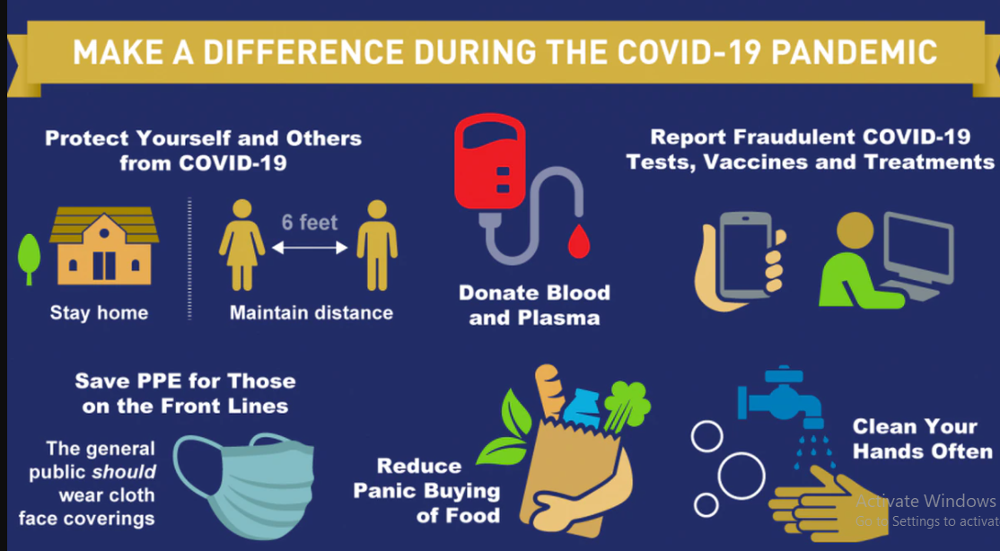

WHO recommends the following set of measurements to prevent person-person spread of
COVID-19:
-
Limit close contact between infectious people and others. Ensure a physical distance of at
least 1 meter from others. In areas where COVID-19 is circulating and this distance
cannot be guaranteed, wear a mask.
-
Identify infected people quickly so that they can be isolated and cared for and all of their
close contacts can be quarantined in appropriate facilities.
-
Clean hands and cover coughs and sneezes with a tissue or bent elbow at all times.
-
Avoid crowded places, close-contact settings and confined and enclosed spaces with poor
ventilation.
-
Ensure good ventilation in indoor settings, including homes and offices.
-
Stay home if feeling unwell and call your medical provider as soon as possible to
determine whether medical care is needed.
-
In countries or areas where COVID-19 is circulating, health workers should use medical
masks continuously during all routine activities in clinical areas in health care facilities.
-
Health workers should also use additional personal protective equipment and precautions
when caring for COVID-19 patients.
-
Workplaces should have in place protective measures.